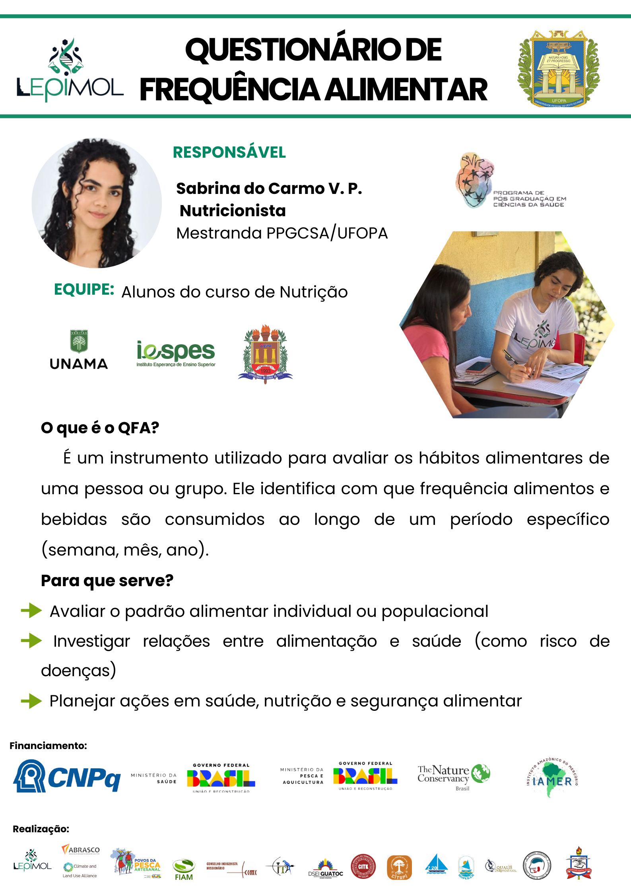

Parte fundamental do trabalho de campo do LEpiMol é a recolha de dados detalhados diretamente com os participantes da pesquisa. Para isso, utilizamos questionários estruturados que nos ajudam a compreender o contexto de saúde e os hábitos de vida da população estudada.
Como Funciona a Aplicação?
Um membro da nossa equipa entrevista o participante seguindo um questionário semiestruturado. Nesse momento, são recolhidas informações sobre diversos tópicos.
O que é Observado?
- Dados do participante;
- Frequência do consumo de pescado e hábitos alimentares;
- Dados retóricos de saúde;
- Dados de sintomas relacionados à exposição mercurial;
- Dados sobre fertilidade para mulheres em idade fértil.
Questionário de Frequência Alimentar (QFA)
Uma ferramenta específica e de grande importância é o Questionário de Frequência Alimentar (QFA), aplicado pela equipa de Nutrição, sob responsabilidade da Nutricionista e mestranda Sabrina do Carmo V. P. O QFA é um instrumento utilizado para avaliar os hábitos alimentares de uma pessoa ou grupo, identificando a frequência de consumo de alimentos e bebidas ao longo de um período.
Este questionário serve para:
- Avaliar o padrão alimentar individual ou populacional;
- Investigar relações entre alimentação e saúde (como risco de doenças);
- Planear ações em saúde, nutrição e segurança alimentar.